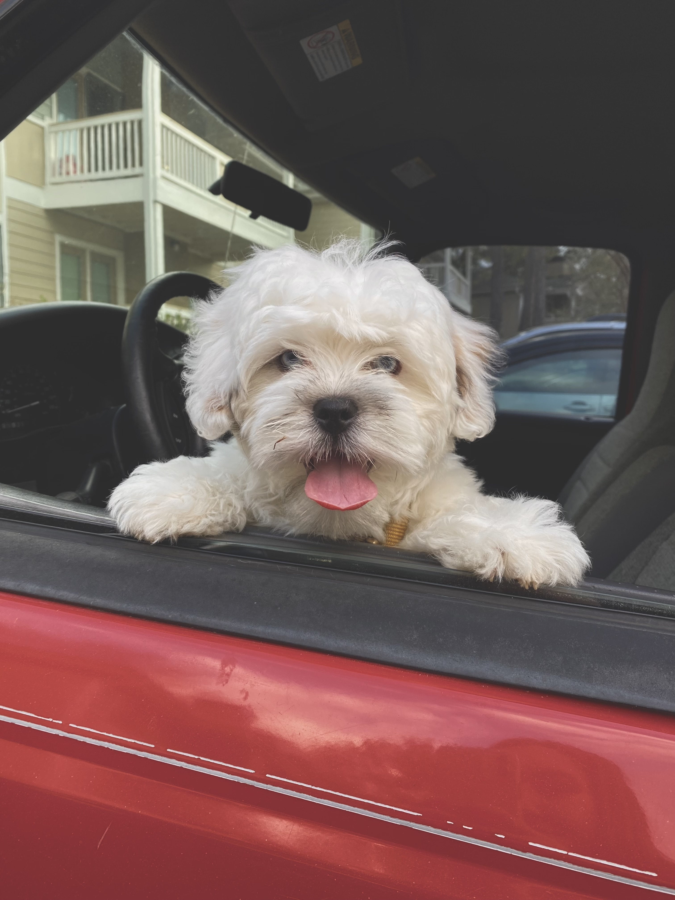
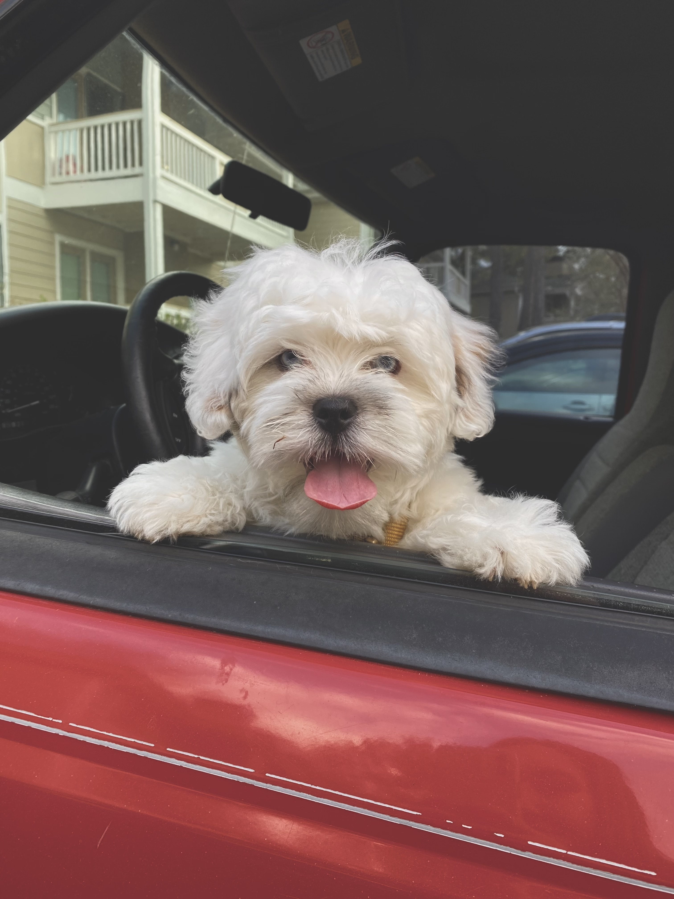

This page is dedicated to my dogs. I have 3 dogs, a German Shepherd, a Pit Bull (mix) and a Maltese (mix). I put the dogs in order of size. There is no favorites here. The German Shepherd is named Dixie, her birthday is 10/16/2015. The Pit Bull is named Kiba, his birthday is 10/27/2022. And then the Maltese is named Muggsy, his birthday is 01/04/2021.
Because this page is dedicated to my dogs, let me tell you a little about them. Dixie is a purebred working line German Shepherd. She was bred many times and has lots of puppies and grand puppies. She also takes play time very serious even though she is an old lady.
Kiba is a Pit Bull mixed with who knows what. He was found on the side of the road and my fiance and I nursed him back to health. He has a very strong food drive and will eat anything. He also has an obsession with blankets.
Muggsy is a Maltese mixed with somthing, he has bright blue eyes and is very... lets say talkative. He is a very stubborn and particular dog who likes to do things his way but he is also very sweet and loving.
 

| Breed | Name | Size |
|---|---|---|
| German Shepard | Dixie | 70lbs |
| Pit Bull | Kiba | 50lbs |
| Maltese | Muggsy | 30lbs |
This is a video of Dixie's puppy having puppies on my Dad's YouTube Channel
If you want to breed German Shepherds here are some tips